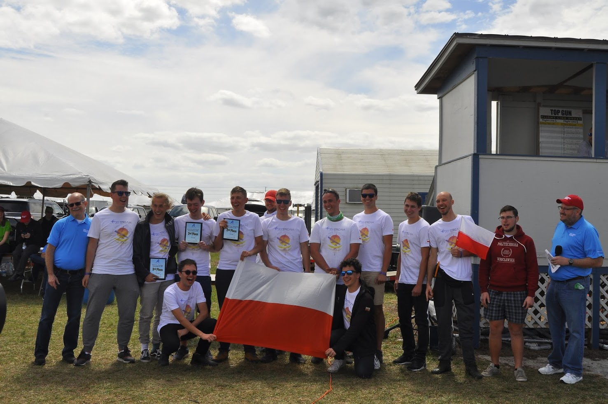
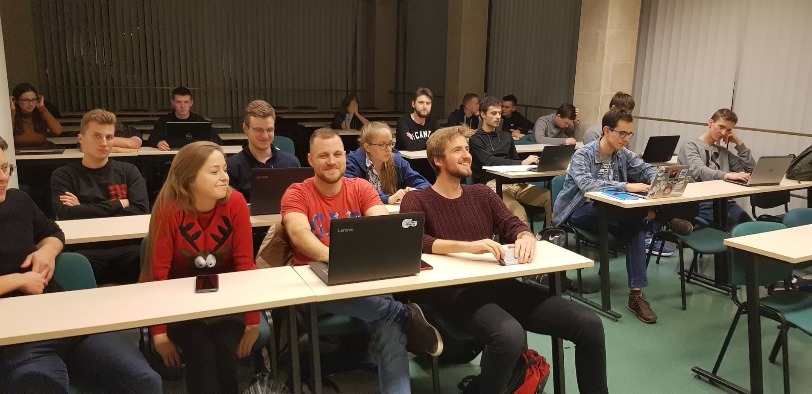

Since 2019, I've been rolling with the Academic Aviation Club - a student research circle from my uni, dedicated to developing autonomous airplanes and drones. I've got the know-how to develop on top of ArduPilot-based flight controllers.
As a confimation of my skills: I've attended SAE Aero Design 2020 and my team has placed second in the Advance cathegory.
Since my first Linux install (was 16 back then), I've fallen in love with the customizability and flexibility of this operating system. Since then, I've been using it everywhere I could (my Kindle runs Arch btw).
I've a solid knowledge base on Linux-related tools: from shell scripts to Docker containers. In my spare time, I'm running Linux-related lectures on my uni, trying to teach more people about the advantages of the OS and providing them with knowledge for a painless transition to Linux.
Python is my primary language, as I do lots of prototyping and scripting. In my high-school years, after getting a grip on the basics of programming, I've turned to WebDev, which has been my passion for the last years of high school and first years of uni.
I've been field tested during Nokia Innovative Projects, scoring a second place with a project of a global, team-based RTS game - Consquare (kind of like Pokemon Go, except you actually get to affect the world around you, not just change the color of some statically placed structures on the map). We wrote game in Unity and the server software in Django.
I've started programming with C/C++, then switched to high-level languages and technologies. My plan is to go full circle and return to low-level - probably with Rust. I'll try to combine my Linux knowledge and low-level programming (backed by high-level prototyping and testing), to develop on embedded devices or to build high-performance desktop apps.